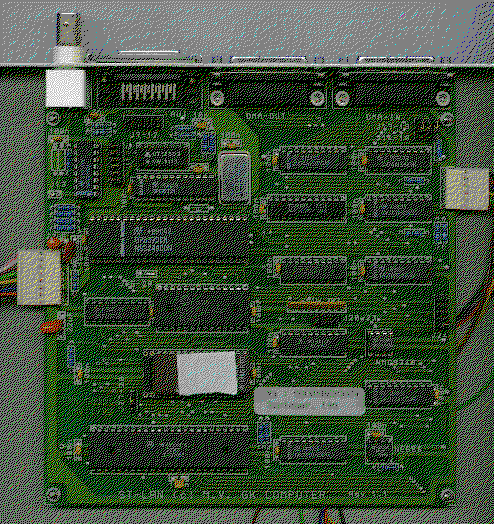

Previous
Next
TOC
Der neue PAMs Net Adapter sitzt in einem Stahlblech Gehäuse und
kommuniziert ebenfalls über den ACSI Anschluß mit dem Computer.

Die Netzwerkkarte für die MegaST Computer wird nach entfernen der
abnehmbaren Plastikabdeckung an der Rückseite des Computers, einfach
in den Megabus gesteckt. Anschließend wird noch das Spannungsversor-
gungskabel auf den freien Stecker gesteckt, der sich links vom dem
Steckplatz befindet wo das Netzteil eingesteckt ist.
An den Jumpern sollte man bei dieser Karte keine änderung vornehmen!
Der Jumper der mit 128/256/512 Beschriftet ist, ist zuständig für den
eingesetzten Epromtyp.
Der links danebenliegende Jumperblock ist für die Bestückungsart zu-
ständig, das heißt: Sind Eprom gesteckt sitzen die Jumper auf 1-2,
werden Rams eingesetzt müssen die Jumper auf 2-3 umgesteckt werden.
Der einzelne Jumper untendrunter ist für das links nebendran sitzende
SRAM zuständig.
Der Jumper zwischen der BNC-Buchse und dem
AUI-Anschluß ist für die
Betriebsartumschaltung zwischen BNC-Buchse und dem
AUI-Anschluß zu-
ständig. Der Kippschalter (sofern vorhanden!) ist für den Autoboot
über das Netzwerk zuständig.
weiterblättern
Kapitel Das PAMs Netzwerk, Seite 2